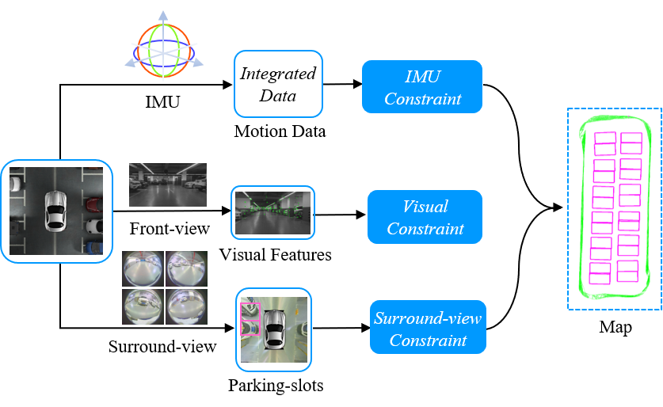
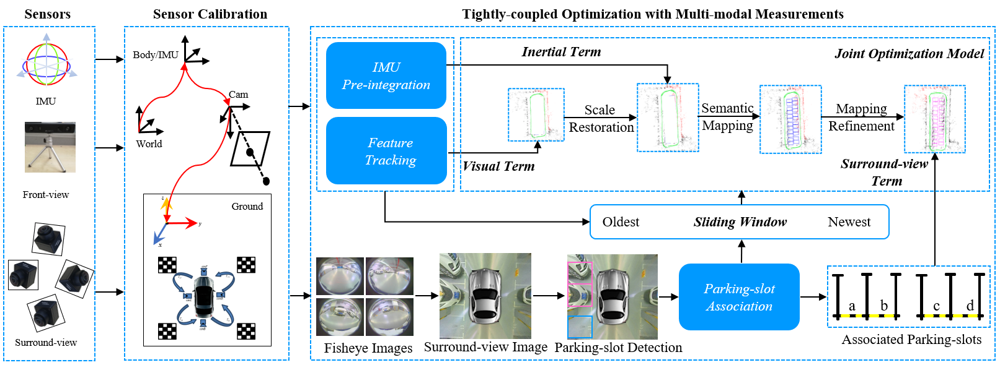
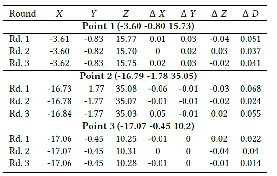
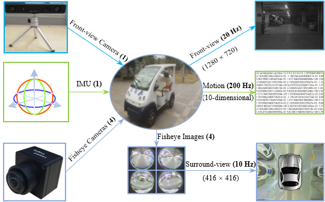

|
A Tightly-coupled Semantic SLAM System with Visual, Inertial and Surround-view Sensors for Autonomous Indoor Parking Xuan Shao1, Lin Zhang1,Tianjun Zhang1, Ying Shen1, Hongyu Li 2 and Yicong Zhou3 1School of Software Engineering, Tongji University, Shanghai, China 2Tongdun AI Institute, Shanghai, China 3 Department of Computer and Information Science, University of Macau, Macau, China |
Introduction
This is the website for our paper "A Tightly-coupled Semantic SLAM System with Visual, Inertial and Surround-view Sensors for Autonomous Indoor Parking", ACM Multimedia 2020
The semantic SLAM (simultaneous localization and mapping) system is an indispensable module for autonomous indoor parking. Monocular and binocular visual cameras constitute the basic configuration to build such a system. Features used in existing SLAM systems are often dynamically movable, blurred and repetitively textured. By contrast, semantic features on the ground are more stable and consistent in the indoor parking environment. Due to their inabilities to perceive salient features on the ground, existing SLAM systems are prone to tracking loss during navigation. Therefore, a surround-view camera system capturing images from a top-down viewpoint is necessarily called for. To this end, this paper proposes a novel tightly-coupled semantic SLAM system by integrating Visual, Inertial, and Surround-view sensors, VISSLAM for short, for autonomous indoor parking. In VISSLAM, apart from low-level visual features and IMU (inertial measurement unit) motion data, parking-slots in surround-view images are also detected and geometrically associated, forming semantic constraints. Specifically, each parking-slot can impose a surround-view constraint that can be split into an adjacency term and a registration term. The former pre-defines the position of each individual parking-slot subject to whether it has an adjacent neighbor. The latter further constrains by registering between each observed parking-slot and its position in the world coordinate system.
Overall Framwork
The overall framework of VISSLAM is shown in the following figure. Sensor configuration of VISSLAM consists of a front-view camera, an IMU and four fisheye cameras facing ground to form a surround-view camera system. Visual features from the front-view camera, preintegrated IMU measurements between two consecutive keyframes and parking-slots from the surround-view camera system constitute the multi-modal sensor data for VISSLAM. There are two major components in VISSLAM, sensor calibration and joint optimization. Sensor calibration is responsible for multi-modal sensor data fusion. The joint optimization model plays a critical role in tightly fusing multi-modal sensor measurements, which is the core of VISSLAM.

Revisiting Errors
Since it is difficult to obtain the ground truth of driving path, we can evaluate the localization accuracy by measuring the "revisiting error". Revisiting error is valid in localization evaluation in SLAM system because an autonomous parking system allows for an absolute localization error during navigation. As long as the revisiting error is small enough, the vehicle will adopt a consistent driving strategy when it drives to the same position. In actual operation, the driver first manually drove the vehicle at around 10 km/h and the map was then initialized. Three map points at different locations were selected as reference points for test. Specifically, we chose two at the midpoints of both sides of the indoor parking site and one at the corner. After the map was stabilized (usually the vehicle should be driven for about three rounds), we evaluated by manually driving the vehicle to revisit three selected reference points, and recording the current coordinates at the test points. Then the differences in X-direction,Y-direction and Z-direction between the test points and reference points can be obtained. The final revisiting errors were computed by adding up errors in all directions. Revisiting errors on all three reference points (Point 1, Point 2, and Point 3) are presented below.

Tongji Underground Dataset & Relevant Codes
The dataset provides synchronized front-view images and surround-view images at 20 Hz and 10 Hz, respectively, with IMU measurements at 200 Hz. It contains 40,000+ front-view images and 20,000+ surround-view images, each of which was synthesized from four fisheye images, covering a wide variety of real cases in indoor parking sites. 10-dimensional motion data between every two consecutive front-view images was also collected by IMU. The resolutions of the fisheye camera and the front-view camera are 1280 * 1080 and 1280 * 720, respectively. The spatial resolution of each surround-view image is 416 * 416, corresponding to a 10m * 10m flat physical region, i.e., the length of 1 pixel in the surround-view image corresponds to 2.40cm on the physical ground.

This relevant code for processing the data can be found here https://github.com.
Demo Videos
To qualitatively validate the effectiveness of the proposed VISSLAM, we drove the electric vehicle around an indoor parking site at around 10 km/h. The following is the demo video demonstrating the capability of our VISSLAM system.
Last update: Aug. 3,2020